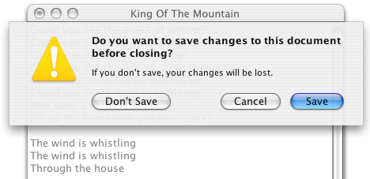
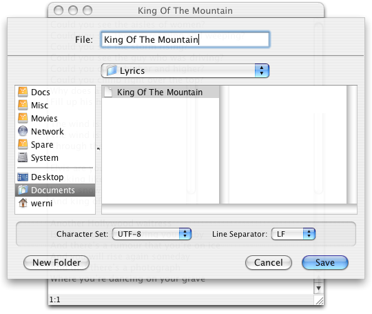

A Sheet is a document modal dialog that is displayed below the title bar of its owner window. JSheet roughly implements the look and feel of a Mac OS X Cocoa NSSheet component.

JSheet provides static convenience methods for displaying JOptionPane's and JFileChooser's.
Since JSheet is only document modal, its show method does not block while the sheet is visible. You have to implement a SheetListener to get the return value of the JSheet.
Here is how to display the option pane shown at the top of this page. Note the use of a client property for specifying the destructive choice on the sheet, and the use of the SheetListener:
JOptionPane pane = new JOptionPane( |
The following code snippet demonstrates how to display a file chooser using JSheet. Please notice the use of the SheetListener:
final JFileChooser fileChooser = new JFileChooser(); evt.getFileChooser().getSelectedFile(); |